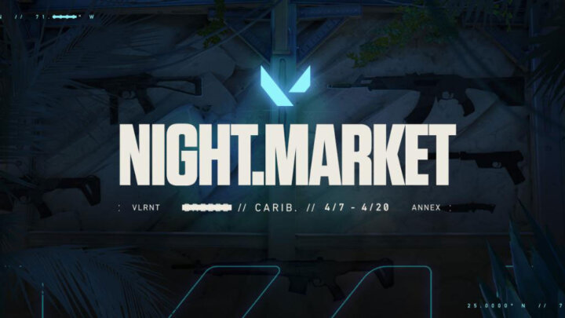

The VALORANT Night. Market is back
VALORANT players will once again have the opportunity to score some in-game cosmetics, as Riot Games announced the return of the Night. Market.
Riot Games announced the return through the game and a tweet posted to the VALORANT Twitter account. The Night. Market will be available from April 7 all the way up until April 20 and just like before, it will offer a total of six in-game cosmetics which are set in stone and are each given an individual discount, with the discount taking into account the rarity of the item.
The Night. Market has gone through some changes in the past, where skins were a lot more random when it first released. Since then the chances to receive certain items have been turned up a little, catering specific items to specific players, while also eliminating the possibility of receiving certain duplicates and guns, ensuring players had the opportunity to at least pick up some unique items and skins. Players who want to check out what the Night. Market has to offer for them will be able to do so through the VALORANT menu, which will then present you with the six items that are available to you.